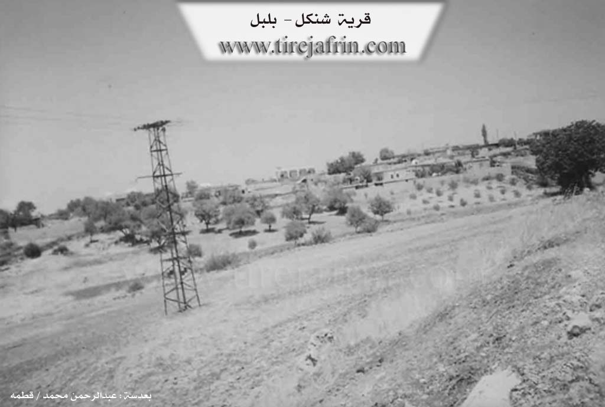

General Information
Nahiya (Subdistrict)
Bilbilê
Also Known As
Şingêl, Şingêlê, شنكل, شنكيل, شنكيله
Tribes
Biyan
Families, Clans, etc.
Ehmedê Geyîkê, Malyê Atêş, Malyê Hecî Mehmûd, Malyê Mehmujiq, Malyê Piçê

Photos

Basic Information about Şingêl
Source: Ax û Welat
Etymology: Named after Dara Şengalê (also called Dara Benaştûkê or Dara Şingêlê), a rare tree found in the village similar to those in the Şengal region
Foundation Date/Period: More than 300 years ago
Hills: Bena Xopê, Bena Rezî, Çiyayê Behîvê, Çiyayê Puskûlê, Çiyayê Reş e berxê
Trees: Dara Şengêlê, Dara Benaştûkê, Dara Kewzanê
Wells: Bîra Jûr, Bîra Jêr
Other Landmarks: Geliyê Hecî, Texta Koprê
Summaries
I. Summary from TirejAfrin Site (English) of Şingêl
Villages of Bilbile District / bilbile
Şinkil (شنكيل) - Şingêl
===
According to the book 'جبل الكرد' 'Mountain of the Kurds' / Afrin City / Geographical Study:
Şingêlê, Şinkil (شنكيل), Şinkel (شنكل) /689n - 13km - 850m/:
- Şinkil (شنكيل): Name of the mountain tree Şingêl that is well-known, which is a type of oak tree, its fruit is smaller than sweet pistachio slightly. The village is located in the middle of a forested mountainous area with many types of mountain trees.
- A medium-sized village that is a few hundred meters away from the Turkish border. It is located on a forested mountainous plateau that slopes steeply toward the north where the Turkish border is.
According to the book 'عفرين .... نهرها ورواببها الخضراء' 'Afrin.... Its River and Green Hills':
Şinkel (شنكل): A village in the Kurdish Mountain (جبل الكرد) belonging to Bilbile district, Afrin City region, Aleppo governorate.
It is a large village located in the northern part of the mentioned mountain on a mountain elevation (wild) that slopes steeply toward the north, and is bordered to the south by water streams that slope toward the west. It is 1km south of the Turkish border, and 15km from Bilbile town in the northeastern direction. It is bordered directly to the north by the Turkish border, and to the south by a stream valley and a mountain chain planted with forest trees and Kawenda village, and to the west by a high mountain chain called Qara Bil mountain and Bandrak village, and to the east by a stream valley and the Bilbile - Meydan Akbas road and Bik Oba Si village. The number of its houses is about 85 houses, and its age is about 400 years. Its old houses are stone-clay with flat wooden roofs, and the modern ones are cement that extended east and west. It has an electricity network and an elementary school and a mosque. Most of its inhabitants work in dry farming on an area of 100 hectares - olives, grains and sweet pistachios on the mountain slopes in the form of terraces, in addition to raising sheep and goats. The village drinks from cisterns that collect rainwater in winter. It connects to the district center by paved roads that pass near it.
Village mayor: Mohammed Khalil Atash (محمد خليل عطش)
II. Summary of Şingêl from Ax û Welat
Source: https://www.youtube.com/watch?v=nIyr9FtOtK8
The village of Şengêlê (also referred to as Şingêlê) is located in the Raco district of the Afrin region. It sits only 500 meters from the border with Turkey, a geographical reality that has deeply defined its history and social structure. The village was founded more than 300 years ago by a settler named Silû (or Silêvan). The name of the village is derived from a massive, ancient tree known as Dara Şengêlê (or Dara Şengalê), a type of terebinth (Dara Benaştûkê) that is said to be rare in the region but common in Şengal.
The drawing of the border following the Sykes-Picot Agreement and the subsequent establishment of the Turkish-Syrian frontier severed Şengêlê from its neighbors and relatives. Historically, the village was intimately connected with settlements now on the "Serxet" (north of the border), including Dêl Osman, Hesar, and a large village called Xoca, which was split in half and largely destroyed by the border demarcation. Villagers recall that before the wire fences and landmines were installed, particularly during the 1950s, residents would freely travel between these villages for weddings, funerals, and daily trade. The separation resulted in families being cut off from their ancestral lands and graveyards (tirb), which remain inaccessible on the other side of the border. The area was also affected by the Hareketa Mirîdîn (Movement of the Murids) around 1938, during which villagers temporarily displaced themselves to stay with relatives before returning.
The village population consists entirely of the Biyan tribe. Originally, the village was comprised of four main households: Malyê Atêş, Malyê Mehmujiq, Malyê Piçê, and Ehmedê Geyîkê. Today, the village has approximately 115 houses. The economy relies heavily on agriculture, specifically olive groves, vineyards, and the production of grape derivatives like dimis (molasses), bastîq, and mêwîj. Water is scarce; there are no natural springs (kanî), so the community historically relied on two wells, Bîra Jûr and Bîra Jêr, and rainwater cisterns.
Şengêlê is renowned for its traditional medicinal knowledge centered around the iconic Dara Şengêlê. Elders describe extracting resin (benîşt) from this tree to create a salve mixed with soap or clay. This mixture was historically used to treat wounds, specifically those on livestock attacked by wolves, as well as human injuries. The village also has a history of traditional healers treating a condition called Qulbaşî. The community has suffered significantly from the militarization of the border; several residents, including the speakers, have lost limbs to landmines planted in their fields near the boundary line. Despite these hardships, the village maintains a strong sense of communal unity, resolving internal disputes through forgiveness rather than courts, and has recently established a youth football team named Şingal.
II. Ax û Walat Book 1
VILLAGE OF ŞINGÊLÊ
4.5.2016
The village of Şingêlê is located on the border of northern Kurdistan, only about 500 m away from the border. For this reason, the villagers are constantly subjected to savage attacks and actions by the Turkish state when they go to their fields.
The village of Şingêlê is affiliated with the Reco district of the Efrîn canton, located 20 km northeast of the city of Reco and 55 km north of the city of Efrîn.
Previously, the village was affiliated with the Bilbilê district, but after the declaration of the Autonomous Administration in the Efrîn canton at the beginning of 2014, the village was attached to the Reco district.
The name of the village Şingêlê comes from the name of the (Şengalê) tree or the male (mastic) tree, because there is a tree of this type in the village, and it is said that this type is very rare, and they are also found in the ŞENGALÊ region in southern Kurdistan, and the mastic of that tree is sold.
The village was built on an area called (Benê Hopir). To the south are Benê Rêzê and the village of Bîkê; to the west are Mount Behîvê and the villages of Kosa and Penêrekê; to the north are the Pisûklê mountain range, the Hecî valley, and the villages of Hesarê and Dêl Osman on the border; and to the east are the village of Çerçiya and Mount Reşê Berxê, which are on the border.
There are 2 water wells near the border (Upper Well and Lower Well), and their water is still available, but unfortunately, the village's water is generally scarce, so the villagers rely on collecting rainwater in cisterns to obtain water.
There is a region called (Serê Benê); it is a high area from which all the Gewr and MAREŞ mountains can be seen, and it offers a beautiful and lush view and has become a place for fun and excursions, so people visit it on summer days and spend pleasant times.
It is worth mentioning that many of the villagers' fields remained on the other side of the border after the border was established between the North and Rojava in 1938, and to this day, their deeds or documents are with the owners of those properties.
Strong social ties exist between the people of the village and the villages on the border, from the villages of Dêl Osman and Hesarê, to this day, and the official wires have never been able to cut this relationship, because they have all been relatives and kin for a long time, and this relationship continues to be stronger than before. Also, many young men and women from the village have married young men and women from those villages.
Due to the savage actions of the Turkish soldiers on the border, many people from the village have encountered mines and soldiers' bullets while visiting their fields, and as a result, many people have lost their legs, and some have also been injured by bullets.
Many foreigners who try to cross the border are shot at by the soldiers and are injured or often lose their lives. Also, near the village of Şingêlê, the Turkish state is building the (Wall of Shame) to firmly establish the division of the North and Rojava.
About 115 houses and around 800 people live in the village. It is worth mentioning that emigration has not affected the people of the village, due to the creation of job opportunities for the youth in the village.
The villagers make their living from agriculture, from orchards of olives, grapes, cherries, pistachios, and almonds, and the villagers also produce many products from grapes, such as sweet molasses, bastiq, miwîj, and sinciqan.
Along with agriculture, the villagers rely on raising livestock such as goats and sheep.
There is a sewing workshop in the village where about 10 workers work, and there is also a restaurant near Efrîn where many people work. Some people also work in the institutions and bodies of the Autonomous Administration in Reco and Efrîn.
A martyr named Ş. Sefqan is from the village, and the village commune has been named after him. The commune is very active, and one of the services it provides to the village is the construction of the road between Şigêlê and Penêreka and the creation of a large square in the village for gatherings and celebrations. It has also started the work of repairing all the roads within the village.
A special characteristic of the village of Şingêlê is that they solve all their problems quickly, and all the villagers are in harmonious and good relations with each other, and they all act as one family during celebrations and sorrows.
There are 4 families in the village, and all are from the Biya clan. Silo, or (Silêman), was the first person to settle in the village. After he started a family, the village became populated and grew.
Nearly 20 people have graduated from university in various fields, and many people have also obtained institute and high school diplomas.
Due to the low rate of emigration, the young people of the village organize many different activities. One of them is the creation of a youth football team called the (Şengal) team, which competes with the district's teams.
The Ottoman state and the Syrian state changed the names of many Kurdish areas, but they could not change the name of the village of Şingêlê because of the villagers' disapproval and their insistence on keeping the original name of the village.
During holidays and celebrations, the girls and women of the village gather and play their special games, set up swings, and sway in the cool breeze, spending their time happily.
Transcriptions and Subtitles
| Source | Video | Subtitles | Transcript |
|---|---|---|---|
| Ax û Welat 1 | Watch Video | Download SRT | View Transcript |
Possible Village Name Meaning of Şingêl
Name of the mountain tree Şingêl that is well-known, which is a type of oak tree.
Source: TirejAfrin Site